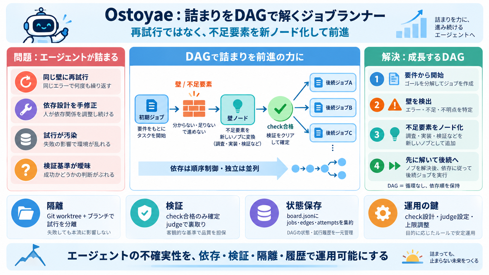

OpenAI Symphony Explained: Autonomous AI Coding Agents (2026)
``` graph TB subgraph "Linear Issue Tracker" L1[Todo Issues] L2[In Progress Issues] L3[Done / Closed Issues] end subgrap…

``` graph TB subgraph "Linear Issue Tracker" L1[Todo Issues] L2[In Progress Issues] L3[Done / Closed Issues] end subgrap…
For small codebases or infrequent agent use, the baseline remains appropriate. The architectural value of Symphony's sup…
| Name | Name | Last commit message | Last commit date | --- --- | | .github | .github | | | | assets | assets | | …
SCOTTSDALE, Ariz., April 16, 2026 /PRNewswire/ -- GitKraken, the world's leader in premier Git tools for software develo…
| CrewAI | Central manager delegates tasks to agents and validates their outputs. | Explicit manager-to-agent task hando…